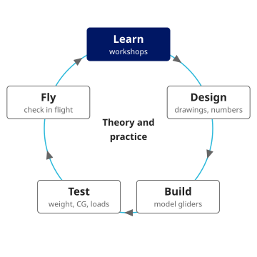

Activities
We learn in workshops, design and build model aircraft, and fly them to check our work. These are our four activities for the 2026 academic year.
How we learn

This year
Workshops (on campus)
Members take turns teaching mechanics and the basics of aeronautical engineering: forces on a wing, centre of gravity and stability, structures and materials.
Before any building, every member takes a safety session on tools and adhesives. Members who fly also take a session on flight procedures and the relevant law.
Designing and building model aircraft (on campus)
Each member designs and builds a model glider or similar aircraft. We check the design on the ground by measuring weight and centre of gravity and by static load tests on the wing.
Flying model aircraft (off campus)
Test flights and flying days take place in nearby parks and similar sites whose rules allow model flying. We are still choosing the site. We do not fly on campus, models included.
Literature study and conceptual design of full-size aircraft
We study the literature on existing gliders and practise conceptual design by working out the main dimensions. Flying full-size aircraft is not part of our activities (our policy on full-size aircraft).
Reports
Glider rigging and de-rigging workshop (12 July 2026)
Four of our members joined a workshop on assembling and taking apart a glider, held together with student teams from other universities. We handled the wings and fuselage ourselves and learned how the aircraft is built and how it goes together. No flying took place.


Plan for the year
| Autumn | Write the group rules and hold a general meeting / Start safety sessions and workshops / Design model gliders / Shortlist flying sites and check their rules and the law |
|---|---|
| Winter | Continue workshops / Build model gliders and test them on the ground / Test flights and flying days / Literature study and conceptual design exercises / Write the activity report |
Safety procedures
Safety comes first, and we move forward one stage at a time. On a model flying day we work in this order.
- Risk assessment: at a new site or with a new aircraft, we list the people, buildings, roads, trees and wind around us and decide how to reduce each risk.
- Briefing: everyone confirms the plan, the roles, the weather limits and the conditions for stopping.
- Pre-flight checks: we weigh and record every aircraft and check the aircraft and transmitters.
- During flight: we keep well clear of the surroundings and post a lookout. If anyone approaches, we stop at once.
- Debriefing: we review what happened and share near misses.
We follow the Civil Aeronautics Act, the Act on Prohibition of Flight of Small Unmanned Aircraft, the Radio Act and the rules of each flying site.
Thinking about joining?
No aviation background is needed. Ask us anything on Discord first.